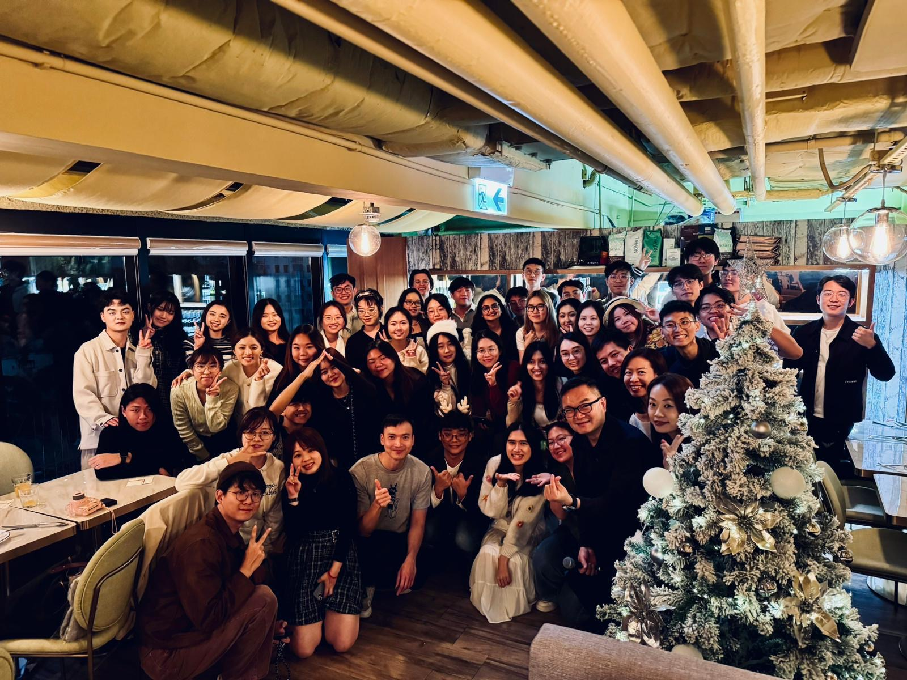
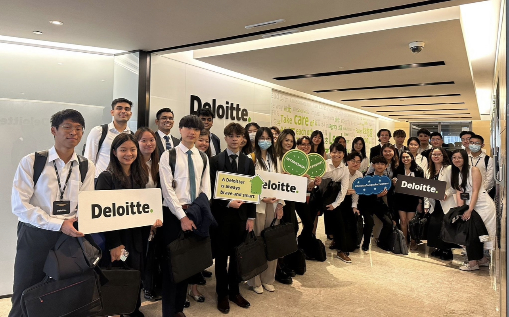

Intern of System Delivery and Modernization
Core Business Operations, Deloitte Digital Consulting
Kick-Starting the Journey

Celebrating Milestones
Deloitte Engineers!

More Than Colleagues~

What a ride!
Highlights
- Held dual roles as a Business Analyst and a Technical Developer, actively coordinating front-end business goals and back-end technical support to establish ETL development and optimization workflow within the collaborating workplace context.
- Designed and implemented the core deduplication strategy for high-stakes member, transaction, and invoice datasets, achieving consensus across client (MKT, BT) and Deloitte (DTT) teams on a feasible, unified solution.
- Developed Python scripts for automated exception detection and efficient data cleansing, transformation, and mapping in relational databases; created visualizations to communicate succinctly with stakeholders and non-techinical teams.
- Designed data integrity and accuracy validation strategies and implemented with SQL, delivering key metric validation reports to ensure proper migration of high-stakes Salesforce CRM data.
- Engineered Azure Data Factory pipelines for databases migration (MongoDB, Cosmos DB), complemented by KQL monitoring and Python scripts for automated log exception extraction and analysis.
- Proposed ML solutions to drive business, including an off-season promotion plan based on seasonality forecasting; an Apriori-driven personalized marketing strategy; and a member recall program using classification models such as random forest and gradient boosting.